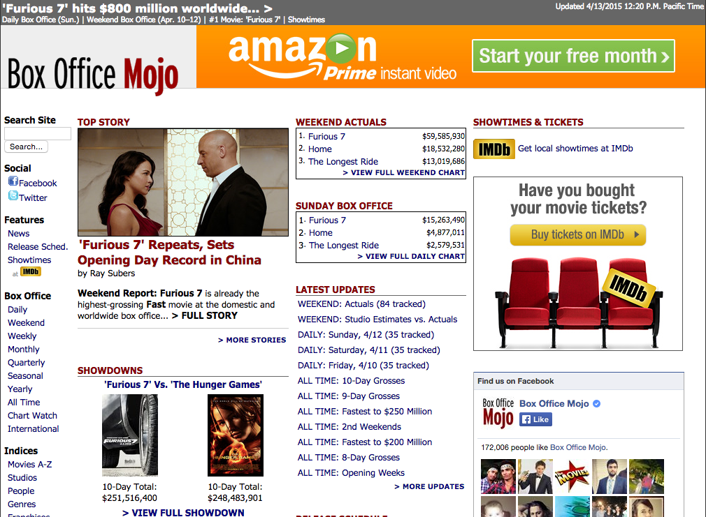

BeautifulSoup
 Today, we got into a python tool called BeautifulSoup (v.4) that is used to scrape data from websites. This wasn't my first time scraping since I have some experience using differnt PHP tools, especially SimpleHTMLDom. But, after using BeautifulSoup just for a few minutes, I quickly realized how superior of a tool it is. It is quick to learn with very logical syntax and for the most part, it just works. There's less time spent debugging, which means more time spent actually solving the main problem.
Today, we got into a python tool called BeautifulSoup (v.4) that is used to scrape data from websites. This wasn't my first time scraping since I have some experience using differnt PHP tools, especially SimpleHTMLDom. But, after using BeautifulSoup just for a few minutes, I quickly realized how superior of a tool it is. It is quick to learn with very logical syntax and for the most part, it just works. There's less time spent debugging, which means more time spent actually solving the main problem.
Project Luther
Our main problem is our 2nd project called Project Luther, named after:
Yea, I don't know who he is either. I actually thought it was Luther Vandross when I first saw the picture...
Don't they look alike? Anyways, we don't actually know the point of this project yet except that it will involve scraping web data. I'm assuming that most of the challenges (separate) from the project will involve scraping Movie / Film data.
Box Office Mojo
We started playing around with a site today called Box Office Mojo that contains a huge database of movies. So I decided to go all out, and just scrape every single movie on the site.

So the process is simple. Basically, I go to the index page and then iterate through each letter (#,A-Z) and through each sub-section of each page and scrape the links to the movies.
Then I follow the link to each movie and scrape movie data from the single movie page. I was able to scrape all the movies along with their genres, release dates, distributors, runtimes, ratings, budgets and domestic grosses.
I thought I'd share my initial code for getting all the movie urls from the pages:
import urllib2
from bs4 import BeautifulSoup
import logging
logging.basicConfig(level=logging.DEBUG)
def get_all_movies():
""" returns all the movie urls from boxofficemojo.com in a list"""
# Alphabet loop for how movies are indexed including
# movies that start with a special character or number
index = ["NUM"] + list(string.ascii_uppercase)
# List of movie urls
movies_list = []
# Loop through the pages for each letter
for letter in index:
# Loop through the pages within each letter
for num in range(1, 20):
url = ("http://www.boxofficemojo.com/movies/alphabetical.htm?"
"letter=" + letter + "&page=" + str(num))
try:
page = urllib2.urlopen(url)
soup = BeautifulSoup(page)
rows = soup.find(id="body").find("table").find("table").find_all(
"table")[1].find_all("tr")
# skip index row
if len(rows) > 1:
counter = 1
for row in rows:
# skip index row
if counter > 1:
link = row.td.font.a['href']
# don't add duplicates
if link not in movies_list:
movies_list.append(link)
counter += 1
except Exception, e:
logging.exception(e)
return movies_list
What I Learned Today:
BeautifulSoup is simply beautiful.